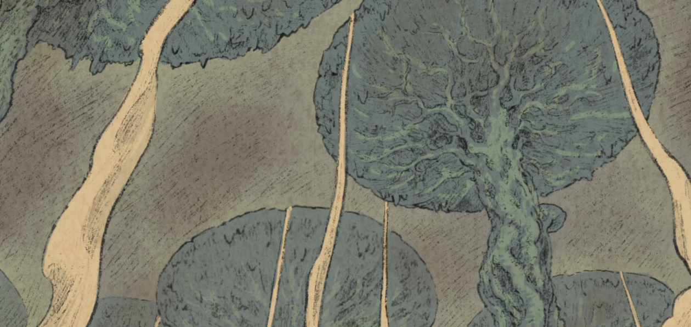

TOWN OF ORTH
1ST EDGE OF THE ABYSS

2ND FOREST OF TEMPTATION

3RD GREATEST FAULT
4TH THE CUP OF GIANTS

5TH SEA OF CORPSES

6TH THE CAPITAL OF THE UNRETURNED

7TH THE FINAL MAELSTROM
THE DEEPEST POINT